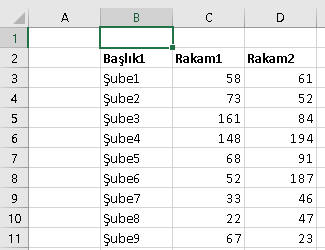

Range nesnesi, VBA dünyasındaki en temel nesnemizdir. Kodlarımızın nerdeyse hepsinde bu
nesneyi kullanacağız ve dahası, kodlarımızın önemli bir kısmını bu nesne ve
türevleri oluşturacak. Bu
nedenle bu nesnenin üyelerini yani metod ve özelliklerini(property) çok iyi
bilmemiz gerekiyor.
Hücrelere erişmek
Range diyince aklımıza neler gelir: Tek bir hücre, bitişik
olup olmaması farketmeyen hücre grubu, bir satır, birkaç satır, veya
sütunlar. Hemen örneklere bakalım:
| Gösterim |
Tür |
Anlamı |
| Range("A1") |
Tek hücre |
A1 hücresi |
| Range("A1:B2") |
Bitişik çoklu hücre |
A1 ile B2 arası |
| Range("A1:B2,C3:D4") |
Bitişik olmayan çoklu hücre |
A1-B2 ve C3-D4 arası |
| Range("Ozelalan") |
İsim verilmiş alan |
Name Managerde "Ozelalan" olarak belirlenen yer |
| Range(Range("A1"),range("C5")) |
başlangıç ve bitişi ayrı belirtilmiş rangeler |
A1-C5 arası |
Bir hücreyi işaret etmenin başka yolları da var. Özellikle
döngülü kodlarda Cells(satırno, sütunno)
veya Cells(satırno, sütunharfi)
ifadelerini çok kullanacağız. Bunun dışında bir de
[]'ler içinde direkt hücre adresini vermek şeklinde de ulaşacağız. Ör:
Cells(3,2).Select 'B3 hücresini seçer
Cells(3,"B").Select 'Bu da B3 hücresini seçer
[A1:B5].Select 'A1-B5 arasını seçer
[ozelalan].Select
Bu arada gördüğünüz üzere bir Range'i seçmek için
Select metodunu kullanıyouruz.
'Range ile döngü
For i = 1 To 10
Range("A" & i).Value = i & ".satır"
Next
'Cells ile döngü
For i = 1 to 10
Cells(i,1).Value= i & ".satır"
Next
Şimde de tüm sütun seçme işlemleri var
| Gösterim |
Tür |
Anlamı |
| Range("A:A") |
Range içinde harf |
A kolonu |
| Columns("A") |
Columns içinde harf |
A kolonu |
| Columns(1) |
Columns içinde index |
A kolonu |
| Range("A:C") |
Bitişik çoklu kolon |
A-C arası kolonlar |
| Columns("A:C") |
Bitişik çoklu kolon |
A-C arası kolonlar |
| Range("A:C,E:E,H:K") |
Bitişik olmayan çoklu kolon sadece Range ile |
A-C, E ve H-K kolonları |
| Columns |
Tüm kolonlar |
Tüm kolonlar |
Bir de tüm satır seçme işlemleri var
| Gösterim |
Tür |
Anlamı |
| Range("1:1") |
Range içinde satır no |
1.satır |
| Rows(1) |
Rows içinde index |
1.satır |
| Range("1:5") |
Bitişik çoklu satır |
1-5 arası satırlar |
| Rows("1:5") |
Bitişik çoklu satır |
1-5 arası satırlar |
| Range("1:5,8:10") |
Bitişik olmayan çoklu satır sadece Range ile |
1-5 ve 8-10 arası satırlar |
| Rows |
Tüm satırlar |
Tüm satırlar |
| |
|
|
Çoklu seçimlerde bir de Union metodu
kullanılır. Gerçi bu metod Range nesnesinin değil Application nesnesinin
metodudur ama olsun yeri geldiği için burada değinmiş olduk. (Kesişim
kümesini bulan
Intersect metodunu ise Applicaton
sayfasında inceleyeceğiz.)
Dim r1, r2, myMultipleRange As Range
Set r1 = Sheets("Sheet1").Range("A1:B2")
Set r2 = Sheets("Sheet1").Range("C3:D4")
Set myMultipleRange = Union(r1, r2)
myMultipleRange.Font.Bold = True
Bir yerde çoklu seçim olup olmadığını anlamak için
Areas özelliği kullanılır.
If Selection.Areas.Count > 1 Then
MsgBox "Çoklu seçim var, lütfen tek bir alan seçip öyle devam edin"
Exit Sub
End If
Bazı durumlarda Range'leri bir değişkene atayacağız. Range nesnesini, adı
üstünde bir nesne olduğu için Set ifadesi ile atamasını yaparız.
Dim alan As Range
Set alan=Range("A1:B5")
alan.Formula="=Rand()"
Hücreleri seçmek
Rangeler aslında bir Worksheetin Range propertysinin dönen değeridir.
O yüzden bir sayfa ismiyle kullanılırlar, ancak çoğu zaman sayfa ismi
olmadan kullanırız. Bunun anlamı, o anki aktif sayfanın Range'leri
üzerinde işlem yapıyoruz demektir. Yani aslında Range("A1")
yazmak, ActiveSheet.Range("A1") yazmanın kolay yoludur.
Yukarıdaki örneklerde gördüğünüz üzere range nesnelerini seçmek için
Select metodunu kullanıyoruz. Range("A1").Select gibi.
Bunu kullanırken dikkat edilecek nokta, seçtiğiniz Range nesnesinin
aktif sayfada olmasıdır. Yani 2.sayfada iken şöyle bir seçim
yapamazsınız.
Sheets(1).Range("A1").Select
Bunu tek satırda yapmanın farklı bir yolu var: (Biraz garip ama doğrusu bu)
Application.Goto Sheets(1).Range("A1")
'veya bir diğer yol da önce ilgili sayfayı seçip sonra hücreyi seçmek olabilir
Sheets(1).Select
Range("A1").Select
Başka dosyadaki bir hücreyi ve daha bir sürü farklı seçme türünü
görmek için buraya göz atmak isteyebilirsiniz.
NOT:Excel, aynı anda birden çok sayfadaki Range'i seçmemize izin
vermez.
Seçme işleminin performansa etkisi
Select işlemi oldukça maliyetli bir işlemdir. Bu nedenle mecbur
kalınmadığı sürece seçme işlemi yapılmamalıdır. Örneğin bir hücreye
değer atanacaksa seçmeden de atanabilir. Aşağıdaki örnek ne demek
istediğimi net şekilde anlatmaktadır.
Sub secim_maliyeti()
Dim bas As Single, bitis As Single
bas = Timer
For i = 1 To 10000
Cells(i, 1).Select 'bu varken 43 sn, yokken 1 sn
Cells(i, 1) = i
Next i
bitis = Timer
Debug.Print bitis - bas
End Sub
Select vs Activate
Select'e benzer bir görevi olan bir de Activate metodu vardır, ki
Activate
sadece tek bir hücreyi aktive ederken Select ile bir hücre grubunu da
seçebiliriz. Üstelik hali hazırda seçili bir yer varken, seçim
değiştirilmeden o seçim içinde bir hücre bile aktive edilebilir.
Aşağıda bu konuyla ilgili küçük bir örneğimiz olacak, ancak yine bu
konuyla alakalı olarak ActiveCell ve Selection farkına da değinelim.
ActiveCell vs Selection
O anda bulunduğumuz hücre üzerinde bir işlem yapmak istersek bir
Range türü olan ActiveCell nesnesini kullanırız.
Bulunduğunuz yer tek bir hücre değil de hücre grubu ise
Selection nesnesini kullanırız.
Bir hücre grubu seçiliyken ActiveCell özelliği kullanılırsa o hücre
grubunun ilk hücresi(sol üstteki) dikate alınır.
Bunların ikisi de Application nesnesinin bir propertysi olup, Application
ifadesi olmadan da kullanılabilirler(Application default nesne olduğu
için). Bu arada bu iki özellik de Range
objesi döndürdükleri için
bunlardan nesne diye bahsederiz.
Sub select_activate()
Range("A1:B10").Select
Debug.Print ActiveCell.Address 'sol üstteki ilk hücre, yani A1
Debug.Print Selection.Address 'tüm alan, yani A1:b10
Range("B8").Activate
Debug.Print ActiveCell.Address 'B8
Debug.Print Selection.Address 'seçili hücre B8 olmakla birlikte seçili alan hala aynıdır, değişmemiştir, o yüzden Immediate Window'da a1:b10 yazar
Range("C8").Activate 'ilk seçim alanının dışında bir hücre seçiliyor, artık selection da değişmiştir
Debug.Print ActiveCell.Address 'C8
Debug.Print Selection.Address 'C8
End Sub
Areas
Ctrl tuşuyla seçilen ve birbirinden farklı bölgelerde
bulunan hücrelere Areas collection'ı ile ulaşırız.
Sub areasornek()
x = 10
For Each alan In Selection.Areas
alan.Interior.ColorIndex = x
x = x + 1
Next alan
End Sub
CurrentRegion ve UsedRange
Bulunduğunuz hücrenin veya o anki aktif seçili bölgenin etrafındaki tüm
bitişik hücrelerden oluşan bölgeyi seçmek, o bölgede işlem yapmak için
CurrentRegion
özelliği kullanılır. Aynı işlemi Excelde Home>Editing>>Find&Select>Go To Speacial
seçeneğinden aşağıdaki gibi de
yapabilirsiniz.
Syntax: RangeNesnesi.CurrentRegion
şeklinde olup örnek kullanımı şöyle olabilir.
ActiveCell.CurrentRegion.Select
Peki bu örnek yeterli değil. O zaman size bir ipucu. Sıralama ve
filtreleme işlemlerinizi Makro Kaydedici ile yaptığınızda , VBA'in size
ürettiği kodda sabit bir alan görebilirsiniz. Ancak sizin makronuz her
zaman bu sabit alan üzerinde çalışmayacaktır. O yüzden o sabit alanı
CurrentRegion özelliğinden faydalanarak değiştirebilirsiniz. Ama bunu
yapmak o kadar da basit değil. Offset ve Resize özelliklerinden de
faydalanmamız gerekecek. Bu örneği biraz aşağıda ilgili yere gelince
düzelteceğiz.
Range("A2").Select
ActiveWorkbook.Worksheets("Sheet1").Sort.SortFields.Clear
ActiveWorkbook.Worksheets("Sheet1").Sort.SortFields.Add Key:=Range( _
"A2"), SortOn:=xlSortOnValues, Order:=xlAscending, DataOption:= _
xlSortNormal
With ActiveWorkbook.Worksheets("Sheet1").Sort
.SetRange Range("A2:F175") 'işte burayı değiştireceğiz, Range("A2:F175") yerine Range("A1").CurrentRegion yazıp deneyin, işe yaramadığını görün
.Header = xlNo
.MatchCase = False
.Orientation = xlTopToBottom
.SortMethod = xlPinYin
.Apply
End With
UsedRange, Range nesnesinin değil Worksheet nesnesinin bir özeliğidir
ama CurrentRegiona benzerliği nedeniyle burada bahsetmenin uygun
olacağını düşündüm. Bununla birbirine komşu olmayan alanları bile
kapsayacak şekilde, tüm işlenmiş
alanları seçmek için kullanırlır. Burada
işlenmişten kastım, bir veri girişi yapılmış veya default formatı
değiştirilmiş bir hücredir. Mesela aşağıdaki örnekte, UsedRange
seçimi yapıldığında B2:G10 seçilirken
H11 hücresinin font büyüklüğü 1 birim artırılırsa veya Tarih formatı
uygulanırsa, içi boş bile olsa UsedRange bunu da kapsayacak şekilde
genişler ve B2:H11 olur.
Syntax: WorkSheet.UsedRange şeklinde olup örnek kullanımı da
şöyledir.
ActiveSheet.UsedRange.Interior.Color = vbYellow
Özel seçimler(SpecialCells)
Bazen de boş hücreler, formül içeren hücreler, sadece görünen
hücreler gibi özel seçimler yapmak isteriz. Bunlar için de
SpecialCells özelliği kullanılır. İki
parametre alır ve syntaxı şöyledir.
Syntax:SpecialCells(Type, Value)
Type parametresinin alacağı değerler şöyledir:
| Constant |
Anlamı |
Numerik Değeri |
| xlCellTypeAllFormatConditions. |
Herhangibir formatı olan |
-4172 |
| xlCellTypeAllValidation. |
Validation kuralı eklenmiş hücreler |
-4174 |
| xlCellTypeBlanks. |
Boş hücreler |
4 |
| xlCellTypeComments. |
Yorumlu hücreler |
-4144 |
| xlCellTypeConstants. |
Sabit değer içeren hücreler(formülsüzler yani) |
2 |
| xlCellTypeFormulas. |
Formüllü hücreler |
-4123 |
| xlCellTypeLastCell. |
Ctrl+End etkisi(Son hücre) |
11 |
| xlCellTypeSameFormatConditions. |
Aynı conditional formatı olan hücreler |
-4173 |
| xlCellTypeSameValidation. |
aynı validation kuralı olan hücreler |
-4175 |
| xlCellTypeVisible. |
Görünür hücreler |
12 |
Eğer tip olarak constant veya formül seçildiyse ikinci paremetre
olarak şunlar seçilebilir.
| Constant |
Numerik Değeri |
| xlErrors | 16 |
| xlLogical | 4 |
| xlNumbers | 1 |
| xlTextValues | 2 |
Birkaç örnek vermek gerekirse;
'nümerik değer içeren hücrelerin arkaplan rengini sarı yapalım
Worksheets("Sheet1").Cells.SpecialCells(xlCellTypeConstants, xlNumbers).Interior.Color = vbYellow
'formül içeren hücrelerin yazı rengini kırmızı yapalım
Worksheets("Sheet1").Cells.SpecialCells(xlCellTypeConstants, xlTextValues).Font.Color = vbRed
Uç noktalar
Bir hücrenin veya hücre grubunun sanki Excel'de Ctrl+Home, Ctrl+End,
Ctrl+Ok tuşlarına basılmış gibi bir etki göstermesi için de çeşitli
propertyler var. Şimdi onlara bakalım.
| Eylem |
Yöntem |
| Ctrl+Home | Cells.SpecialCells(xlCellTypeVisible)(1).Select
* |
| Ctrl+End | Cells.SpecialCells(xlCellTypeLastCell).Select |
| Ctrl+↑ | ActiveCell.End(xlUp).Select |
| CTrl+↓ | ActiveCell.End(xlDown).Select |
| CTrl+→ | ActiveCell.End(xlToRight).Select |
| CTrl+← | ActiveCell.End(xlToLeft).Select |
*Gizlenmiş/Filtrelenmiş bir satır/sütun
yoksa Range("A1").Select de bu işi görecektir
Bir hücrenin değerini okumak, ona değer atamak
Range nesnesinin Value,
Value2 ve Text
propertyleri vardır. Bunlardan
Value, bu nesnenin default özelliğidir. Default özellik şu demek, onu
yazmadan da kullanabilirsiniz. Mesela Range("A1")
ile Range("A1").Value tamamen özdeştir.
Ancak ben şahsen sizlere iyi bir kodlamacı özelliği olarak default özellikleri es geçmeden
açıkça yazmanızı öneririm.
Value özelliği hem okunabilir hem değer atanabilir bir özelliktir, dönüş
değeri Varianttır. Yani herşeyi döndürebilir, string, integer, tarih, boş.
Dim v As Variant
v=Range("A1").Value 'Değeri okudum, Value özelliğini belirttim
Range("A1")="Volkan" 'Değer atadım, Value özelliğini belirtmedim, çünkü default özellik
Value2 özelliği Value'ya benzer, ancak Value hücrenin içindeki gerçek
değeri aynen verirken Value2 ise Tarih veya parabirimi formatındaki veriyi de
düz sayıya çevirir.
Text ise Excelde gözümüzle ne görüyorsak bize onu veirir, yani
formatlanmış halini verir.
Eğer düz bir metin veya sayı ile çalışıyorsanız Value2'yi kullanmanızı
tavsiye ederim. İçlerinde en hızlısı ve sorunsuzu budur.
Ör:A1 hücresinde 21.01.1979 değeri varken hücre formatını Long Date
olarak değiştirdikten sonra aşğıdaki kodları çalıştıralım ve farkı
görelim.
Sub valuetext()
With Range("A1")
Debug.Print .Text '21 Ocak 1979 Pazar
Debug.Print .Value '21 Ocak 1979
Debug.Print .Value2 '28876
End With
End Sub
Hücrenin rengi
Hücrenin arkaplanı ve yazı rengini belirlemek için sırasıyla
aşağıdaki kodları kullanırız.
Range("a1").Interior.Color = vbRed
Range("a1").Font.Color = vbYellow
'Interior ve Font propertylerinde başka neler var, şöyle bir gözatın
'işinize yarayacak neler var aklınızda tutun, ilerde lazım olabilir
Cut,Copy,Paste,Insert işlemleri
Cut,Copy,Paste
Excelde yaptığımız Cut, Copy işlemleri için Range nesnesinin aynı
isimli metodlarını kullanıyoruz. Paste işlemi içinse Range nesnesinin
doğrudan bir Paste metodu yok, PasteSpecial metodu vardır. Exceldeki "Sağ
tık>Yapıştır" veya Ctrl+V kombinasyonlarıyla yaptığımız yapıştırma
işleminin VBA karşılığı ActiveSheet metodunun Paste metodu olup detayına
buradan
ulaşabilirsiniz, aşağıda da küçük bir örnek bulunuyor.
Sub cutcopypaste()
Sheets(1).Select
Range("A5:B5").Select
Selection.Cut 'veya Selection.Copy
Sheets(2).Select
ActiveSheet.Paste
End Sub
PasteSpecial
A5:B5 hücre grubunda formüller varsa ve bunların sadece değerlerini
yapıştırmak istersek işte o zaman PasteSpecial kullanırız. Aşağıda Macro
Recorder ile kaydedilmiş bir kodu görüyoruz.
Sub cutcopypaste()
Sheets(1).Select
Range("A5:B5").Select
Selection.Copy
Sheets(2).Select
ActiveCell.PasteSpecial xlPasteValues
End Sub
Aslında bu işlemi yapmanın basit bir yolu daha var, Copy metodunu
destination parametresi ile kullanmak:
Sub cutcopypaste()
Range("A5:B5").Copy Destination:=Sheets(2).Range("A15") 'Destination tek argüman olduğ için yazmaya gerek yok
End Sub
PasteSpecial'in parametrelerinin alabileceği değerleri görmek için PasteSpecial yazdıktan
sonra boşluk veya "(" tuşuna basar basmaz Intellisense bize enumeration
listesini çıkarır.
NOT:Tek hücre için PasteSpecial'ı xlPasteValues
parametresiyle yapmak yerine kısayol olarak doğrudan hücrelerin
içeriğini eşitlenebilir.
Range("A2").Value=Range("A1").Value
Insert
Excelde yaptığımız satırları/sütunları kesip/kopyalayıp başka bir
satırların/sütunların arasına sokma işlemini yine aynı isimli Insert
metodu ile yapıyoruz.
Rows("2:2").Select
Selection.Cut
Rows("9:9").Select
Selection.Insert Shift:=xlDown 'parametre belirtilmezse Excel kendi karar verir
Formül işlemleri
Biz genel olarak kodlarımızda hücrelere formül yazdırmayacağız, ancak
ender de olsa bu işlemi yaptırmamız gerekebilecektir. Bunun için önce
Macro Recorder ile hücrelere birşeyler yazalım ve nasıl formül
ürettiğine bakalım. Gördüğünüz gibi tüm formüller, hatta metin ifadeler
bile FormulaR1C1 özelliği ile ele alındı.
Range("H6").Select
ActiveCell.FormulaR1C1 = "volkan"
ActiveCell.FormulaR1C1 = "=TODAY()"
ActiveCell.FormulaR1C1 = "=RC[-2]*2" 'solundaki 2 hücreye referans
Biz Excel'de formüllerimizi klasik stilde(A1 stili) yazmaya alışık
olduğmuz için bu FormlaR1C1 yerine Formula propertysini
kullanırız.
Selection.Formula = "F6*2"
Son olarak dizi formülü yazmaya yarayan FormulaArray
var, onun kullanımı da aşağıdaki gibi olup, Exceldeki görünümü
{=MAX(IF(C:C<100;C:C))} şeklindedir.
Selection.FormulaArray = "=MAX(IF(C[-5]<100,C[-5]))"
Range'in adresi
Address propertysi ile alınır. String
değer döndürür.
Debug.Print ActiveCell.Address '$ işaretli mutlak adres
Debug.Print ActiveCell.Address(0,0) '$ işaretsiz göreceli adres
Address özelliğini
worksheet olaylarında Target.Address
şeklinde çok kullanacağız.
Keza, aktif hücrenin belirli bir adreste olup olmadığını kontrol
etmek için de kullanılabilir.
If ActiveCell.Adress="B$1$" Then .....
Range Property'si
Şimdiye kadar Range nesnesini, Worksheet nesnesinin bir özelliği
olarak kullanmış olduk. Ancak bunu bir Range nesnesinin özelliği olarak
da kullanabiliriz.
İster tek bir hücre seçiliyken ister bir hücre grubu seçiliyken
olsun, Range özelliğini kullanırsak, tek hücre için kendisini, hücre
grubu için sol üstteki ilk hücreyi referans alarak yeni konum
belirlemiş oluruz ve bu referansı da A1 hücresine olan göreli farkla
elde ederiz. Ör: C3 hücresindeyken, Selection.Range("B1").Select
dediğimizde ne olur tahmin edelim:A1'e göre B1 nerdedir, bir sütun
sağdadır, o yüzden C3'teyken Range("B1") dersek bir sağdaki D3
seçilir. Keza C4:F6 hücre grubu seçiliyken
Selection.Range("C2").Select dersek ne olur;C2, A1'e göre 2 sağda 1
aşağıdadır. C4:F6'nın ilk hücresi de C4 olup 2 sağ ve 1 alttaki
hücresi nedir, E5.
Ben şahsen Range nesnesinin Range özelliğini çok kullanmam, onun yerine
Item ve Offset özellikleri daha kullanışlıdır. Hemen onlara bakalım.
Item, Cells, Offset, Resize Propertyleri ve göreceli başvurular
Item, Belirtilen range'in hangi satır
sütunundaki hücresi olduğunu döndürür. Ör: Range("B3:D6") alanının
1.satır, 2.sütundaki hücresini şu şekilde elde ederiz.
Range("B3:D6").Item(1,2).Select 'C3 hücresi seçilir
İkinci parametre opsiyonel olup, tek parametre verilirse, ilgili
alanın soldan sağa kaçıncı hücresinin seçileceği belirtilmiş olur.
Range("B3:D6").Item(1).Select 'sol üstteki ilk hücre yani B3 seçilir
Range("B3:D6").Item(2).Select 'C3 hücresi
Range("B3:D6").Item(5).Select 'C4 hücresi
Item özelliği Range nesnesinin default özelliği olup bunu yazmadan da
kullanabiliriz.
Range("B3:D6")(1).Select 'Range("B3:D6").Item(1).Select demektir
Cells(2,3).Select 'Cells.Item(2,3).Select demektir.
Item özelliğinde ilgili Range'in dışına çıkabiliriz. Mesela 0 veya
negatif rakamlarla sola ve üste, Range'in toplam alanından daha büyük
rakamlarla da sağa ve aşağı doğru ilerleyebiliriz.
Range("D3:F6").Item(0,-1).Select 'B2 hücresi seçilir
Range("D3:F6")(13).Select 'D7 seçilir
Cells ile de Item'a benzer bir kullanımımız
mevcuttur. Cells, hem Range nesnesinin, hem de Worksheet nesnesinin bir propertysidir. Range ile kullanıldığında o
Range'in hangi
hücresini seçeceğimiz belirtirken worksheet ile kullanırken(veya
aktif sayfa için sheet adı yazmadan) tüm sayfanın kaçıncı hücresi
olduğunu belirtiriz.
Bunların birarada kullanımına ait örnekleri aşağıda
bulabilirsiniz.
Sub görelisecim()
Dim alan As Range
Set alan = Range("C5:E8")
alan.Select ' tamamı
alan.Range("A1").Select
alan.Item(0, 0).Select ' bir satır sol üst
alan.Item(1, 1).Select 'sol üstteki ilk hücre
alan.Item(1).Select 'sol üstteki ilk hücre
alan.Item(0).Select 'sol üstteki ilk hücrenin bir solu
alan.Cells(1, 1).Select 'sol üstteki ilk hücre
alan.Cells.Select 'tamamı
alan.Offset(1, 1).Select 'toplam alan büyüklüğü aynı kalack şekilde bir aşağı bir sağa kaydır
alan.Offset(0, 0).Select 'tamamı
alan.Offset().Select 'tamamı
alan(1, 1).Select 'item gibi davranır
alan(0, 0).Select 'item gibi davarnır
alan(1).Select 'item gibi davranır
alan(0).Select 'item gibi davranır
End Sub
Gördüğünüz gibi Item ile Cell hep aynı sonucu veriyor. O halde
neden iki ayrı property var diye düşünüyor olabilirsiniz. Cevap:Item aslında
Range'e ait specific bir özellik değildir. Item,
collection tarzı tüm nesnelerin genel bir özelliği olup,
collectionlardaki elemanların her birini ifade eder. Range de bir
hücreler koleksiyonu olduğu için bu özelliği devralmıştır.
Bu arada farkettiniz mi bilmiyorum ama bu tek indeks verme olayı,
bir sütunda aşağı doru ilerlemek için güzel bir fırsat sunuyor. Mesela Range("A1")(1) A1
hücresini ifade ederken, Range("A1")(5) A5, Range("A4")(11) de
A14 hücresini. Bu yöntem az sonra göreceğimiz Offsetin güzel
bir alternatifi olmaktadır.
Offset(x,y) ile referans verilen bir range'in x satır sağına(x
negatifse soluna) ve y sütun altına(y negatifse üstüne) gideceğimize karar
veririz.
Syntax:RangeObject.Offset(satır,sütun)
şeklindedir.
Burda Range tek bir hücre olabildiği gibi, hücre grubu veya bir
satır/sütun da olabilir
Sub offsetornek()
Range("C2").Offset(1, 0).Select 'C3
Range("C2").Offset(-1, 2).Select 'E1
Range("C2").Offset(0, -2).Select 'A2
Range("C2").Offset(0, 0).Select 'C2
Range("C2").EntireRow.Offset(1).Select '3.satır. Range("C2").EntireRow.Offset(1,0).Select ile aynıdır. İkinci parametre yoksa 0 anlamındadır
Range("C2").EntireRow.Offset(-1).Select '1.satır
Range("C2").EntireColumn.Offset(, -1).Select '2.sütun. Range("C2").EntireColumn.Offset(0, -1).Select ile aynıdır. ilk paramterde 0 yerine boş da geçilebilir
Range("C2:F6").Offset(1, 1).Select 'D3:G7 seçilir
End Sub
Resize ile bir Range nesnesi yeniden
boyutlandırılır.
Syntax:Resize(satırboyutu, sütunboyutu).
İki
parametre de opsiyonel olup belirtilmezlerse olduğu yerde kalır.
Sub resizeornek1()
Range("C3:G7").Select
Selection.Resize(Selection.Rows.Count - 1, Selection.Columns.Count + 2).Select
Range("C3:G7").Resize.Select ' aynen kalır
Range("C3:G7").Resize().Select 'aynen kalır
Range("C3:G7").Resize(1).Select 'kolon parametresi yok, o yüzden aynı kalır, satır ise 1 satır olacak şekilde daralır
Range("C3:G7").Resize(, 2).Select 'satır parametresi yok, o yüzden aynı kalır, sütun ise 2 sütun olacak şekilde daralır
End Sub
Resize'ın güzel kullanımlarından biri de bir range'in olduğu gibi
bir diziye atanıp başka bir yere kopyalanmasındadır. Aşağıdaki
örneğe bakalım. A1:C16 arasındaki herşey E1:G16 alanına aktarılacak.
İşlemin hangi kodla yapıldığını buradan
görebilirsiniz.
İşte şimdi bir de offset ve resize'ın birlikte kullanımına bir
örnek. (Globaliconnect.com sitesinden alınmıştır)
Sub RangeOffsetResize1()
'form a pyramid of numbers, using Offset & Resize properties of the Range object - refer Image 7a.
Dim rng As Range, i As Integer, count As Integer
'set range from where to offset:
Set rng = Range("A1")
count = 1
For i = 1 To 5
'range will offset by one row here to enter the incremented number represented by i - see below comment:
Set rng = rng.Offset(count - i, 0).Resize(, i)
rng.Value = WorksheetFunction.RandBetween(10 ^ (i - 1), 10 ^ i)
'note that 2 is added to i here and i is incremented by 1 after the loop, thus ensuring that range will offset by one row and the incremented number represented by i will be entered in the succeeding row:
count = i + 2
Next
End Sub
Şimdi de, biraz yukarda CurrentRegion özelliğinde bir örneğimiz
vardı, yeri gelince düzelteceğiz demiştik. Yapacağımız şey, bir
listeyi başlığı hariç seçmek olacak. Burda yukardaki örnekten farklı
olarak önce Resize sonra Offset yapacağız.
enalt = Range("A1").End(xlDown).Row
Set alan = Range("A1").CurrentRegion.Resize(enalt - 1).Offset(1)
Range("A2").Select
ActiveWorkbook.Worksheets("calculatedlar").Sort.SortFields.Clear
ActiveWorkbook.Worksheets("calculatedlar").Sort.SortFields.Add Key:=Range( _
"A2"), SortOn:=xlSortOnValues, Order:=xlAscending, DataOption:= _
xlSortNormal
With ActiveWorkbook.Worksheets("calculatedlar").Sort
.SetRange alan 'Makro recordardan sabit gelen bu kısmı değiştirdik
.Header = xlNo
.MatchCase = False
.Orientation = xlTopToBottom
.SortMethod = xlPinYin
.Apply
End With
Column, Columns, Row, Rows
Columns:Bir Range nesnesinin kolonlarını ifade
eder. Genelde count özelliği ile kullanılır ve ilgili alanda kaç kolon seçili olduğu
elde edilir. Ayrıca ilgili alandaki belirli kolonlar üzerinde
formatting işlemleri yapılabilir. Tabi burda kolondan kastımız tüm bir
kolonunun seçimi değil, ilgili alandaki dikey blokların seçimidir. Örneğin
A2:B10 alanı içinde Columns(2) seçildiğinde sadece B2:B10 seçilir, tüm
B kolonu değil.
Column:Tek bir hücre sözkonusuysa onun bulunduğu
kolonun index numarası, birden çok hücre grubu sözkonusuya ilk
hücresinin bulunduğu kolonun index numarası döner.
Rows ve Row de Columns ve Column'un
satır versiyonudur.
Mesela şu tablo;

Sub ZebraYap()
Dim alan As Range
Set alan = Range("B3:D11")
For i = 1 To alan.Rows.Count
If i Mod 2 = 1 Then
alan.Rows(i).Interior.Color = vbBlue
Else
alan.Rows(i).Interior.Color = vbWhite
End If
Next i
alan.Columns(1).Font.Bold = True
End Sub
kodu çalıştıktan sonra böyle görünür
Peki bir hücrenin bulunduğu tüm satır veya sütunu seçmek isteseydik?
O zaman da EntireRow ve EntireColumn özelliklerini
kullanırız.
ActiveCell.EntireColumn.Select 'aktif hücrenin bulunduğu tüm kolonu seçer
ActiveCell.EntireRow.Select 'aktif hücrenin bulunduğu tüm satırı seçemer
Item özelliğinde olduğu gibi Columns için de range'in sınırları
dışındaki index numarları verilebilir. Bu da bize kolonlarda tek tek
ilerlemenin kolay yöntemlerinden birini sunmuş olur.
Ör:Range("A1").Columns(2), B2 hücresine ilerlemenin bir yoludur ve
döngüsel işlemlerde bi yerden bi yere programatik olarak
ilerlememizi sağlar.
Satır/Sütun ekleme, silme, gizleme
Makro kaydedicisi ile birkaç işlem yaptım ve kodları aşağı aldım.
Columns("E:E").Select
'Şimdi kolon eklenecek
Selection.Insert Shift:=xlToRight, CopyOrigin:=xlFormatFromLeftOrAbove
Columns("F:F").Select
'Şimdi kolon silinecek
Selection.Delete Shift:=xlToLeft
Rows("4:4").Select
'Satır eklenecek
Selection.Insert Shift:=xlDown, CopyOrigin:=xlFormatFromLeftOrAbove
'Satır silinecek
Selection.Delete Shift:=xlUp
Columns("E:E").Select
'Gizlemek için bir eylem yerine Gizli özelliğine True değeri veriliyor
Selection.EntireColumn.Hidden = True
Columns("D:F").Select
'Gizli olan kolonu açmak için de Gizli özelliğine False değeri atanıyor
Selection.EntireColumn.Hidden = False
Range'i bir diziye atama
Belli bir rangedeki değerleri almanın en hızlı yolu burayı
Variant türünde bir diziye atamaktır. Ancak tek
boyutlu bir dizi değil, satır ve sütunu ifade eden iki boyutlu bir
dizi.
Diziler bölümünde detaylı göreceğiz, bir dizinin eleman sayısı
Ubound metodu ile elde edilir. n. boyutundaki eleman sayısı da
Ubound(dizi, n) ile. Bu case'de 1.boyutumuz satırları 2.boyutumuz
ise kolonları ifade ediyor.
Sub range_diziata()
Dim siciller As Variant
siciller = Range(Range("a1"), Range("a1").End(xlDown).End(xlToRight)).Value
'colon sayısı:ubound(siciller,2)
'row sayısı:Ubound(siciller,1) veya kısaca ubound(siciller), 1 defaulat value
Debug.Print UBound(siciller, 2)
Debug.Print UBound(siciller, 1)
'bunu aynen bi yere yapıştırmak için, aynı boyutta olması lazım, bunu da resize ile hallederiz
Range("h1").Resize(UBound(siciller), UBound(siciller, 2)).Value = siciller
End Sub
Veri depolama aracı olarak Range
Masaüstü veya Web tabanlı programlamayla uğraşanlar bilirler,
aynı oturumdayken programı birkaç kez çalıştırdığımızda önceki
çalıştırmalarda elde ettiğimiz bir değeri daha sonra kullanmak için
Visible özelliği False olan yani gizli olan bir Textbox'a(veya
Labela) bu değeri atarız. Mesela bir tuşa kaç kez basıldığını böyle
bir kutu içinde depolayabilir ve 10.kez basıldığında kullanıcıya bir
mesaj gösterebilir veya Programdan çıkışı sağlayabilir veya başka
bir kodun çalışmasını sağlayabilirsiniz.
İşte Excel'de de Range nesnesini bu amaçla kullanabilirsiniz.
Mesela, bir düğmeye ilk kez basıldığında uzun bir kodun çalışmasını,
sonraki basışlarda ise daha kısa kodların çalışmasını
sağlayabiliriz. Örnek kod aşağıdaki gibi olacaktır. Geçici depolama
işini Z1 hücresinde yapacağız(ilk açılışta görünmeyen bir hücre
olması nedeniyle. Mümküse font rengini de beyaz yaparız, veya Z
kolonunu gizleriz.)
NOT:Bu yöntem static değişken tanımlamanın bir alternatifidir.
Sub dugme_click()
'Z1 ilk başta boştur, yani 0'dır.
If Range("Z1").Value2>1 Then
'Sadece son sayfadaki Table'ı refresh et. 10 sn sürer
Else 'Z1=0 ise yani düğmeye ilk kez basılıyorsa
'Tüm sayfalardaki connectionları refresh et. 5 dk sürer.
End If
Range("Z1").Value2=Range("Z1").Value2+1 'Z1dei değeri bir artırıyoruz
End Sub
Bir başka örnek de Workbook_Close ve Workbook_Deactivate olay
metodlarını bir seferde ele almak olabilir. Bu örneğe
bu sayfada yer
verilmiştir.
Find ve Replace
Excel içindeyken Ctrl+F(veya Home>Find) yaptığımızda
karşımıza çıkan Find dialog kutusunu ve sonrasında
yaptığımız bulma işlemini Range nesnesinin Find
metodu ile yapıyoruz. Tahmin ettiğiniz üzere bu metod da yine bir
range nesnesi döndürür, dönen nesne de aranan şeyin ilk bulunduğu
hücredir. Eğer aranan değer bulunmazsa Nothing
döner.
En basit haliyle aşağıdaki gibi kullanılır.
Dim arabul As Range
Set arabul = Range("A1").CurrentRegion.Find("Volkan")
Gördüğünüz gibi hiç parametre kullanmadık. Böyle bir durumda
hangi değerler baz alınır? Şimdi bi genel kültür bilgisi verelim.
Siz Excel'de bu araçla çalışırken en son hangi değerleri
kullanıdysanız bir sonraki aramanızda da bu değerler kullanılır,
çünkü arama ayaralarınız kaydedilir. VBA'de de olan budur. Yani
parametresiz Find kullanırsanız Excelde en son kullandığınız arama
kriterleri kullanılır. O yüzden tavsiyem bu kriterleri açıkça
belirterek yazmanızdır. Aşağıdaki gibi:
Dim arabul As Range
Set arabul = Range("A1").CurrentRegion.Find( _
What:="volkan", _
After:=ActiveCell, _
LookIn:=xlFormulas, _
LookAt:=xlPart, _
SearchOrder:=xlByRows, _
SearchDirection:=xlNext, _
MatchCase:=False, _
SearchFormat:=False)
Parametrelerin açıklamalarını aşağı yukarı tahmin ediyorsunuzudur,
zira bunları zaten Excel içinde sık sık kullanıyorsunuz. Yine de
açıklamlara ve alabileceği değerlere
buradan bakabilirsiniz. (Bunlardan bir tek LookAt
parametresi kafa karıştırıcı
olabilir, çünkü Find dialog
kutusundaki Match Case
seçeneği için aynen MatchCase
parametresi varklen, Match entire cell
cotent için MatchEntireContent
diye bir parametre beklerken bunun yerine
LookAt parametresi var.)
Nothing
Dedik ki aradığımız değer bulumazsa Nothing döndürür, bunu da
aşağıdaki gibi sorgulayabiliriz.
If Not arabul Is Nothing Then
arabul.Select
End If
Diğer Find detayları
Tüm sayfalarda arama yapmak için For Each döngüsü ile sayfalarda
dolaşmak gerekebilir.
Dim ws As Worksheet
Dim arabul As Range
For Each ws In ActiveWorkbook.Sheets
ws.Activate 'veya select
Set arabul = Cells.Find( _
What:="volkan", _
After:=ActiveCell, _
LookIn:=xlValues, _
LookAt:=xlPart, _
SearchOrder:=xlByRows, _
SearchDirection:=xlNext, _
MatchCase:=False, _
SearchFormat:=False)
If Not arabul Is Nothing Then
arabul.Select
Exit For
End If
Next ws
Aradığımız değerin istediğimiz sonucu getirmediğini görür ve aramaya devam
etmek istersek FindNext metodu kullanılır, bu metod
tek bir After parametresi alır.
Cells.FindNext(After:=ActiveCell).Activate
Formatlı arama için Application.FindFormat
propertyleri kullanılır ve SearchFormat=True yapılır. Record makro
ile detaylara bakabilirsiniz.
Replace
Replace metodunun kullanımı Find'a benzer. Find'dan farklı olarak
Range nesnesi değil Booelan döndürür. Sonuç True ise işlemi
yapar, False ise birşey yapmaz. O anda bulunulan hücrenin yeri
değişmez.
Cells.Replace _
What:="ali", _
Replacement:="veli", _
LookAt:=xlPart, _
SearchOrder:=xlByRows, _
MatchCase:=False, _
SearchFormat:=False, _
ReplaceFormat:=False
Application konusunu anlatırken göreceğimiz ve üzerinde epeyce
duracağımız konulardan biri da Calculation işlemleridir. Calculate
metodu Application nesnesinde var, Worksheet nesnesinde var,
Workbook nesnesinde yok ama bir döngü ile sağlanabiliyor. Range'te
yok mu? Tabiki var. Diyelim ki, Calculation durumu Manuel set
edilmiş durumda ve sayfanızın münferit yerlerinde tonla formül var,
siz sadece belirli bir grup hücrede formüllerin hesaplanmasını
isteyebilirsiniz. Bunun için küçük bir kod yazıp bunu
QuickAccessToolbarınıza koyabilirsiniz. İşte kodumuz.
Sub rangecalc()
Selection.Calculate
End Sub
Parent özelliği
Bazen bir hücrenin hangi sayfada olduğunu elde etmek isteriz.
Bunun için hiyerarşide bir üst basamağa çıkmamızı sağlayan Parent
özelliğini kullanırız.
Debug.Print TypeName(Activecell.Parent) 'Worksheet
Debug.Print Activecell.Parent.Name 'ilgili Worksheetin adı